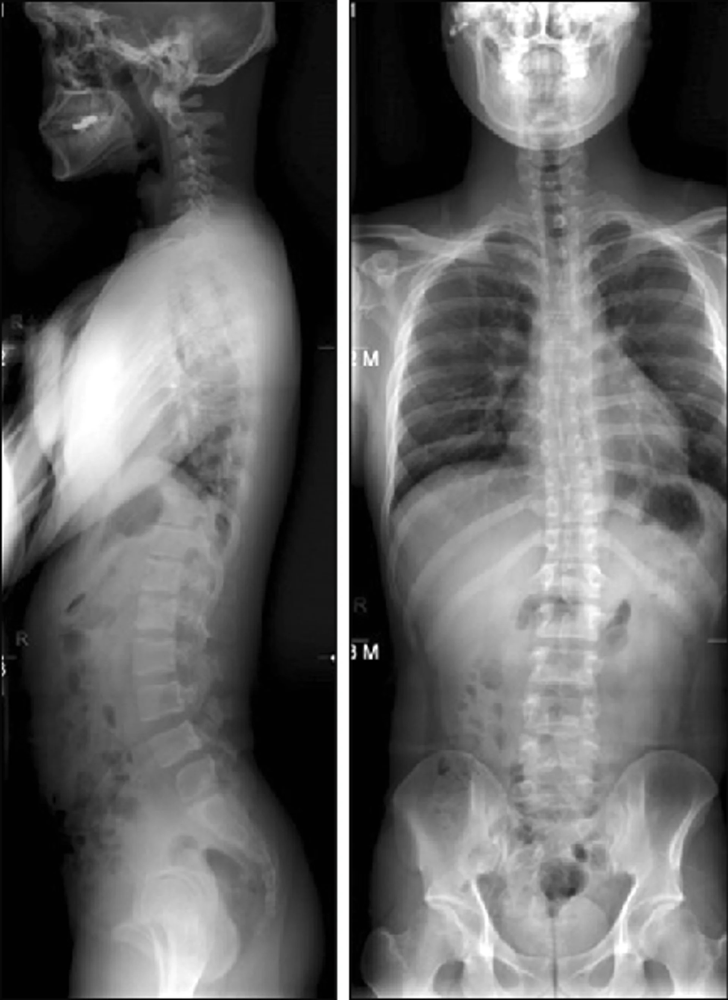

Pain, stiffness, headaches, and whiplash symptoms can show up days or weeks after an accident. Get checked before small injuries become long-term problems.
You stood up at the scene. You answered the officer's questions. You declined the ambulance because you didn't want the bill. That night you slept hard from sheer exhaustion. And you woke up thinking you got lucky.
Here's what almost no one explains about post-accident injuries: your body absorbs the crash in milliseconds — but it reveals the damage in days. Adrenaline and cortisol mask soft tissue injuries for 24 to 72 hours. Whiplash often shows up a week later as headaches you can't shake. Disc damage can stay quiet for a month, then flare the morning you bend down to tie your shoe. And while you wait, the injuries don't sit still — torn ligaments lay down scar tissue in the wrong pattern, joints lock up, and the window for clean healing closes.
There's an insurance window too. Most PIP and MedPay coverage requires you to be evaluated within a tight timeframe after the accident. Wait too long and the carrier gets to argue your pain came from something else — and they win that argument every time.
The injuries that destroy your next year are the ones you couldn't feel on day one.
Not textbook symptoms. The actual moments patients describe when they finally come in.
Look at the image on the right. That's not marketing — it's what we measure. A real before-and-after spinal X-ray, the kind we use to map exactly what the crash did to your alignment and prove what we're fixing.
Your treatment journey starts with imaging and a full clinical exam so we know what's actually injured — not what we're guessing at. From there we use chiropractic adjustments to correct the misalignments caused by impact, soft tissue therapy to break down the scar tissue forming in your sprained ligaments, spinal decompression for disc injuries, and cold laser therapy to calm inflammation and accelerate tissue repair. As pain settles, rehab exercises rebuild the strength and stability the crash took from you.
Every step is documented in the format your insurance carrier and your attorney need. Most PIP and MedPay policies cover this care fully — and we handle the paperwork so you don't have to.
Schedule Your Evaluation
No long sales pitch — just what people actually mention when they tell their friends.
Tell us when the crash happened and what's starting to hurt. We'll get you in fast, document everything correctly from day one, and talk you through your insurance coverage. The PIP window doesn't stay open forever — and the longer untreated soft tissue scars, the more of your recovery you lose for good.